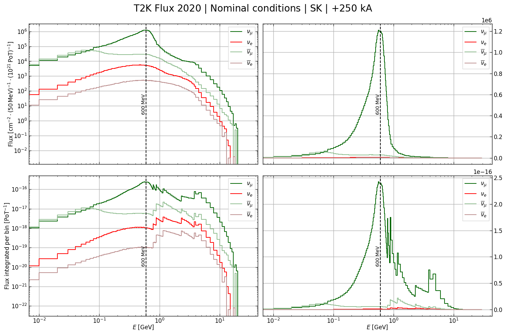
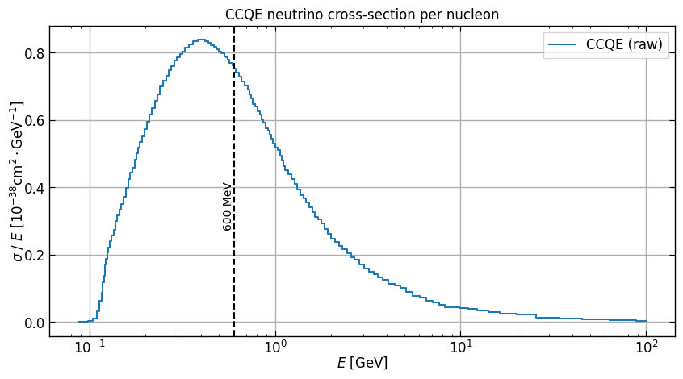

Convolution of the flux and interaction cross-section#
Miscellaneous:
[2]:
import sys
sys.path.append("../../..")
import numpy as np
import pandas as pd
import matplotlib.pyplot as plt
from matplotlib import rc
from src.nu_osc.default_parameters import CONV_CM2_TO_BARN
To make plots more beautiful
[3]:
rc("figure", figsize=(10, 5))
# rc('lines', linewidth=2)
rc("axes", labelsize=12, linewidth=1, grid=True, labelpad=-1)
rc("axes.spines", right=True)
rc("xtick", direction="in", labelsize=12, top=True)
rc("xtick.major", width=0.8, size=5)
rc("ytick", direction="in", labelsize=12, right=True)
rc("ytick.major", width=0.8, size=5)
rc("legend", fancybox=False, fontsize=12, shadow=False)
rc(
"grid",
linewidth=1.0,
) # ls='dotted')
# import matplotlib_inline
# matplotlib_inline.backend_inline.set_matplotlib_formats('retina')
Inferred fluxes at SK from ND280#
Defining a \(\texttt{pandas dataframe}\):
[4]:
fluxes = pd.read_csv(
"t2kflux_2020_plus250kA_nominal_sk.csv",
delimiter=",",
usecols=(lambda x: x != "Bin#"),
)
fluxes = fluxes.rename(columns={"anti-numu": "antinumu", "anti-nue": "antinue"})
fluxes.head()
[4]:
| minE | maxE | numu | antinumu | nue | antinue | |
|---|---|---|---|---|---|---|
| 0 | 0.00 | 0.01 | 866.0 | 892.0 | 7.04 | 2.03 |
| 1 | 0.01 | 0.02 | 5150.0 | 5940.0 | 57.80 | 11.10 |
| 2 | 0.02 | 0.03 | 11400.0 | 14200.0 | 135.00 | 25.60 |
| 3 | 0.03 | 0.04 | 19000.0 | 24400.0 | 245.00 | 44.70 |
| 4 | 0.04 | 0.05 | 26600.0 | 35600.0 | 404.00 | 64.40 |
[5]:
fluxes.describe()
[5]:
| minE | maxE | numu | antinumu | nue | antinue | |
|---|---|---|---|---|---|---|
| count | 138.000000 | 138.000000 | 1.380000e+02 | 138.000000 | 138.000000 | 138.000000 |
| mean | 3.777174 | 3.994565 | 3.667457e+05 | 19051.943014 | 2801.880065 | 299.137313 |
| std | 7.011859 | 7.350760 | 4.188749e+05 | 14349.800825 | 2179.844692 | 201.454071 |
| min | 0.000000 | 0.010000 | 0.000000e+00 | 0.000000 | 0.000000 | 0.000000 |
| 25% | 0.342500 | 0.352500 | 1.030000e+04 | 2105.000000 | 427.750000 | 86.325000 |
| 50% | 0.685000 | 0.695000 | 1.580000e+05 | 25450.000000 | 3105.000000 | 358.500000 |
| 75% | 2.375000 | 2.550000 | 6.715000e+05 | 28900.000000 | 4997.500000 | 490.750000 |
| max | 29.000000 | 30.000000 | 1.210000e+06 | 55700.000000 | 5660.000000 | 531.000000 |
[6]:
plt.step(fluxes.minE, fluxes.numu, label=r"$\nu_\mu$")
plt.step(fluxes.minE, fluxes.nue, label=r"$\nu_e$")
plt.step(fluxes.minE, fluxes.antinumu, label=r"$\overline{\nu}_\mu$")
plt.step(fluxes.minE, fluxes.antinue, label=r"$\overline{\nu}_e$")
plt.axvline(x=0.6, linestyle="--", color="black")
plt.annotate(r"600 MeV", xy=(0.5, 1), fontsize=10, rotation=90)
plt.xscale("log")
plt.yscale("log")
plt.xlabel(r"$E$ [GeV]")
plt.ylabel(
r"Flux [$\text{cm}^{-2}\cdot (50\,\text{MeV})^{-1} \cdot (10^{21}\,\text{PoT})^{-1}$]"
)
plt.ylim(bottom=1e-1)
plt.title(r"T2K Flux 2020 | Nominal conditions | SK | $+250$ kA")
plt.legend()
plt.show()

[7]:
fluxes = fluxes.assign(total=lambda df: df.numu + df.nue + df.antinumu + df.antinue)
[8]:
plt.step(fluxes.minE, fluxes.numu / fluxes.total, label=r"$\nu_\mu$")
plt.step(fluxes.minE, fluxes.nue / fluxes.total, label=r"$\nu_e$")
plt.step(fluxes.minE, fluxes.antinumu / fluxes.total, label=r"$\overline{\nu}_\mu$")
plt.step(fluxes.minE, fluxes.antinue / fluxes.total, label=r"$\overline{\nu}_e$")
plt.axvline(x=0.6, linestyle="--", color="black")
plt.annotate(r"600 MeV", xy=(0.5, 4e-1), fontsize=10, rotation=90)
plt.xscale("log")
# plt.yscale('log')
plt.xlabel(r"$E$ [GeV]")
plt.ylabel(r"Relative flux per bin")
# plt.ylim(bottom=1e-4)
plt.title(r"T2K Flux 2020 | Nominal conditions | SK | $+250$ kA")
plt.legend()
plt.show()

[9]:
integrals = {}
summed_integral = 0
for key in ['numu', 'nue', 'antinumu', 'antinue']:
integrals[key] = [((fluxes.maxE - fluxes.minE) * fluxes[key]).sum() * (50 * 1e21) / (1e3 * CONV_CM2_TO_BARN)] # result in pb/PoT
summed_integral += integrals[key][0]
for key in ['numu', 'nue', 'antinumu', 'antinue']:
integrals[key].append(integrals[key][0]/summed_integral)
pd.DataFrame(integrals, index=['abs', 'relat'])
[9]:
| numu | nue | antinumu | antinue | |
|---|---|---|---|---|
| abs | 30.182094 | 0.358409 | 2.030763 | 0.055815 |
| relat | 0.925063 | 0.010985 | 0.062242 | 0.001711 |
So that the integrated flux at SK (2020, nominal, FHC) per chanel is
\[\begin{split}\begin{matrix}
\Phi_{\nu_\mu} & = & 30.182 & (\text{b} \cdot \text{PoT})^{-1} & & & (92.51 \%) \\
\Phi_{\nu_e} & = & 0.358 & (\text{b} \cdot \text{PoT})^{-1} & & & (1.10 \%) \\
\Phi_{\overline{\nu}_\mu} & = & 2.031 & (\text{b} \cdot \text{PoT})^{-1} & & & (6.22 \%) \\
\Phi_{\overline{\nu}_e} & = & 0.056 & (\text{b} \cdot \text{PoT})^{-1} & & & (0.17 \%) \\ \\
\hline \\
\Phi_\text{tot} & = & 32.627 & (\text{b} \cdot \text{PoT})^{-1} & & & (100 \%)
\end{matrix}\end{split}\]
Interaction cross-section of the CCQE#
[16]:
xsec = pd.read_csv(
"neutrino_ccqe.csv",
delimiter=";",
names=['energy','xsec']
)
xsec.head()
[16]:
| energy | xsec | |
|---|---|---|
| 0 | 0.036370 | 0.031034 |
| 1 | 0.037162 | 0.062069 |
| 2 | 0.038796 | 0.093103 |
| 3 | 0.040502 | 0.120690 |
| 4 | 0.042283 | 0.165517 |
[17]:
xsec.describe()
[17]:
| energy | xsec | |
|---|---|---|
| count | 73.000000 | 73.000000 |
| mean | 88.042114 | 0.369721 |
| std | 349.405503 | 0.288266 |
| min | 0.036370 | 0.000000 |
| 25% | 0.126708 | 0.089655 |
| 50% | 0.823925 | 0.348276 |
| 75% | 7.724146 | 0.631034 |
| max | 2633.666306 | 0.837931 |
[24]:
plt.step(xsec.energy, xsec.xsec, label=r"CCQE", where='mid')
plt.axvline(x=0.6, linestyle="--", color="black")
plt.annotate(r"600 MeV", xy=(0.45, 2e-1), fontsize=10, rotation=90)
plt.xscale("log")
# plt.yscale("log")
plt.xlabel(r"$E$ [GeV]")
plt.ylabel(
r"$\nu$ cross-section / E [$10^{-38} \text{cm}^2 \cdot \text{GeV}^{-1}$]"
)
#plt.ylim(bottom=1e-1)
plt.title(r"CCQE neutrino cross-section")
plt.legend()
plt.show()

Warning
This plot is not good : expecting 0 at 1e-1 => need to take data again